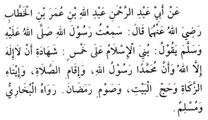
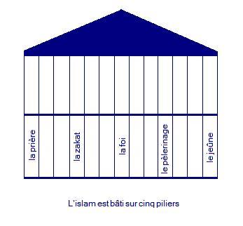

Au nom d’Allah le Clément, le Miséricordieux, Louanges à Allah.
Les piliers de l'islam

Abu Abdel Rahman Abdullah fils de Omar ben al Khattab rapporte : "J'ai entendu le messager d'Allah  dire :
dire :
"L'islam est bâti sur cinq piliers : L'attestation qu'il n'y a de divinité qu'Allah et que Mouhammad est son serviteur et son messager, l'accomplissement de la prière, l'acquittement de la zakat, le pèlerinage à la maison et le jeune de ramadan"
Boukhâry et Mouslim.
Explications :
Abu al-'Abbas al-Qurtubi (rahimahu Allah) a dit que ce Hadith signifie que ces cinq points sont les fondements et principes de base sur lesquels l'islam est fondée.
Ce Hadith ressemble en partie au Hadith 2, l'Imâm Nawawi l'a inclus dans son recueil de 40 Ahâdith du fait de l'importance des cinq piliers de l'Islam.
Ce Hadith est très connu, il doit être appris par cœur et étudié dès l'enfance, il contient en effet des enseignements importants qui permettent de s'initier à la religion. Il s'agit des fondements de l'islam : les cinq piliers qui sont des actes et des paroles obligatoires.
Dans ce Hadith, on remarque que l'intention et la parole (l'attestation) ont précédé les actes d'adoration : la prière, la zakat, le pèlerinage et le jeune sont la mise en pratique de l'attestation.
L'attestation est une parole, la prière et le pèlerinage sont des actes physiques et des paroles, le jeune et la zakat sont des actes physiques sans paroles, mais tous ont une même intention, celle de se soumettre à Allah et de l'adorer.
Cela nous interpelle sur le fait que le croyant qui atteste de sa foi doit nécessairement traduire ses convictions en actes d'adoration. Mais également que la croyance associée à la pratique est une preuve de notre appartenance à l'islam.
Dans le Qur'âne, Allah associe de nombreuses fois la croyance aux bonnes œuvres comme la Salât et la Zakat.
L'islam est bâti sur cinq piliers sans lesquels la maison ( foi ) oscille et risque de s'écrouler. On imagine qu'une maison tenant sur cinq piliers sera solide, stable et fermement implantée, de même, on sait que plus on privera la maison de ses piliers et moins elle sera stable, tout en sachant que s'il ne devait rester qu'un seul pilier, ce serait forcément le pilier central de la maison : la foi.
"Certes Allah ne pardonne pas qu'on Lui donne quelqu'associé. A part cela, Il pardonne à qui Il veut."
Sourate Nissa, verset 48
Si une personne échoue à remplir ses conditions (ses piliers), sa foi peut être mise en danger, mais surtout sa soumission à Dieu n'est pas complète.
Les autres actes de l'islam, qui ne sont pas mentionnés dans ce Hadith peuvent être considérés comme les touches finales qui servent à parfaire la construction.
(On peut faire un dessin de ce Hadith avec des étages et essayer de positionner les autres points importants de l'islam par rapport aux cinq piliers. Ce qui permet d'apprendre visuellement tous les points comme ceci par exemple :

Vous pourriez me renvoyer cette image remplie afin de déterminer ensemble quelles sont les parties manquantes à cette demeure, en m'expliquant selon quel(s) principe(s) vous avez décidé de remplir les vides.)
Le Jihad par exemple n'est pas mentionné du fait de son caractère « Fard kifai », tandis que la prière et le jeune sont « Fard ayni ».
Dans la sourate At-Tawbah (9), verset 109, une métaphore similaire est utilisée pour montrer que la construction du croyant est solide, débute sur des bonnes bases, tandis que la maison du Munafiq (hypocrite) est basée sur des piliers instables qui peuvent conduire à l'écroulement de la construction et surtout qui le mèneront en enfer :
"Lequel est plus méritant ? Est-ce celui qui a fondé son édifice sur la piété et l'agrément d'Allah, ou bien celui qui a placé les assises de sa construction sur le bord d'une falaise croulante et qui croula avec lui dans le feu de l'Enfer ? Et Allah ne guide pas les gens injustes."
Le style métaphorique est souvent utilisé dans le Qur'an et la Sounnah, c'est une manière de simplifier une explication, en la rendant visuelle elle revient à notre esprit rapidement, nous devons donc nous aussi l'employer pour la prédication.
Un compagnon a ainsi dit qu'il avait déjà vu le paradis et l'enfer. Les autres compagnons lui demandèrent comment alors que ce ne sera possible que dans l'au-delà. Il leur a répondu :" Je les ai vus à travers les yeux du prophète . Si je voyais le paradis et l'enfer de mes propres yeux, je ne me croirai pas. Je ferai confiance à la vue du prophète
. Si je voyais le paradis et l'enfer de mes propres yeux, je ne me croirai pas. Je ferai confiance à la vue du prophète  plus qu'à la mienne."
plus qu'à la mienne."
Ainsi, en étudiant le Qur'an et la Sounnah, nous pouvons visualiser l'enfer et le paradis.
On remarque aussi que les piliers sont classés dans un certain ordre avec la foi en premier et la prière en deuxième. La prière est la première chose sur laquelle le serviteur sera interrogé. Elle ne tombe jamais. C'est la corde solide qui relie l'adorateur à son Seigneur. Puis la Zakat, et Allah cite souvent la prière et la Zakat ensemble dans le saint Qur'an : "Et accomplissez la Salât, et acquittez la Zakat " . L'argent est une tentation, les directives sur l'argent sont très présentes dans la Sounnah, et c'est d'après les Ahâdith une tentation de la communauté de Mouhammad . Payer la Zakat, permet à la société de progresser, en évitant de thésauriser l'argent, de partager en donnant aux pauvres et aux indigents, de diminuer notre attachement à l'argent et de nous pardonner nos péchés. Puis c'est le pèlerinage qui est cité dans ce Hadith, avant le jeûne du mois de ramadan.
. Payer la Zakat, permet à la société de progresser, en évitant de thésauriser l'argent, de partager en donnant aux pauvres et aux indigents, de diminuer notre attachement à l'argent et de nous pardonner nos péchés. Puis c'est le pèlerinage qui est cité dans ce Hadith, avant le jeûne du mois de ramadan.
(Je propose mon commentaire personnel : c'est peut être parce que le pèlerinage se fait une fois dans la vie et lave le serviteur des péchés commis dans toute sa vie sauf les dettes tandis que le jeûne se répète chaque année et pardonne les péchés commis d'un ramadan à l'autre.)
Dans d 'autres rapports de ce Hadith (comme celui que nous avons cité plus haut), le Hajj est mentionné avant le jeûne de ramadan. Cependant, et Dieu sait mieux, la forme correcte veut que le jeûne soit avant le Hajj, comme il a été rapporté d'Ibn 'Umar qu'il a corrigé un narrateur qui avait changé l'ordre et dit : "C'est ainsi que je l'ai entendu du prophète ".
".
Cet incident nous montre la précision des Sahaba et des savants du Hadith après eux à préserver les paroles du Messenger .
.
Il est important d'ajouter que les enseignements de l'Islam, sont placés sous le signe de la Clémence. Allah dit :
« Quiconque, mâle ou femelle, fait une bonne œuvre, tout en étant croyant, Nous lui ferons vivre une bonne vie et Nous les récompenserons, certes en fonction des meilleures de leurs actions »
L'enjeu de notre vie terrestre est de préparer notre vie future. Contrairement à ce que beaucoup croient, la Sharia d'Allah permet à la fois de vivre une bonne vie sur terre, et de faire également des provisions pour la vie future, Dieu dit :
« Ceux qui croient et font de bonnes œuvres auront pour résidence les jardins du "Firdaws" (paradis).où ils demeureront éternellement, sans désirer aucun changement »
L'observance de ces cinq piliers permet de gagner l'agrément d'Allah et Son Pardon. Nombreux sont les Ahâdith qui vont dans ce sens :
Sur le jeune :
« Dieu à Lui la puissance et la gloire dit : « Toute œuvre du fils d’Adam lui appartient sauf le jeûne qui est à Moi et c’est Moi qui en fixerait la rétribution. Le jeûne est une protection. Lorsque c’est un jour de jeûne pour l’un d’entre vous qu’il s’abstienne de propos indécents et ne vocifère pas. Si quelqu’un l’injurie ou le dispute qu’il dise : « Je jeûne ». Je jure par celui qui tient l’âme de Mouhammad entre Ses mains, le relent de la bouche du jeûneur au jour de la résurrection, aura une odeur plus agréable auprès de Dieu que l’odeur du musc. Le jeûneur a deux joies : la première quand il rompt son jeûne et la deuxième lorsqu’il rencontrera Son Seigneur.»
Des versets comme pour le pèlerinage :
"Et quand vous aurez achevé vos rites, alors invoquez Allah comme vous invoquez vos pères, et plus ardemment encore. Mais il est des gens qui disent seulement : “Seigneur ! Accorde nous [le bien] ici-bas ! ” - Pour ceux-là, nulle part dans l'au-delà .
Et il est des gens qui disent : “Seigneur ! Accorde nous belle ici-bas, et belle part aussi dans l'au-delà; et protège-nous du châtiment du Feu ! ”.
Ceux-là auront une part de ce qu'ils auront acquis. Et Allah est prompt à faire rendre compte . "
Et il y a de nombreux Ahâdith sur la miséricorde de Dieu liée à l'observance de la prière qui efface les péchés, au pèlerinage qui lave la personne de toutes ses fautes, et de la Zakat qui éteint la colère d'Allah.
Il y a aussi une autre facette de cette miséricorde, visible à travers l'étude de la Sharia islamique en ce qui concerne ces piliers et leur pratique: si on n'est malade ou que l'on n'a pas assez d'argent, on sera dispensé d'aller faire le pèlerinage, si on est malade, on pourra jeuner d'autres jours ou payer de l'argent selon le cas, si on n'a pas d'économies, on ne payera pas la Zakat. La Zakat est de plus d'un faible pourcentage. Pour la prière, on peut noter qu'elle peut être facilitée : il est possible de prier assis ou couché en cas de maladie, de joindre les prières ou de les raccourcir en cas de voyage. Les prières sont aussi étalées sur la journée, ce qui nous permet de nous organiser, leurs horaires varient selon les saisons.
On remarque donc en étudiant la jurisprudence islamique qu'Allah a vraiment facilité l'adoration à ses serviteurs et qu'Il nous a couvert de Sa miséricorde.
Mais plus encore, il a démultiplié les récompenses. Les cinq prières par exemple en valent cinquante.
Premier pilier : L'attestation
Il s'agit de se soumettre à Allah à la foi dans le cœur et les actes, car tout croyant sincère est musulman, mais tout musulman n'est pas forcément un croyant sincère.
Les autres piliers montrent que la foi sincère est reliée à l'adoration sincère. Il faut savoir que l'attestation est liée à d'autres points importants, notamment la croyance au jour dernier, mais aussi aux anges, aux prophètes, aux livres de Dieu et au destin. Il est impératif de les connaître, car on ne peut pas, par exemple, être considérer comme un musulman si on renie la vie après la mort, la prophétie de Jésus ou de Moïse, ou l'existence de l'ange Gabriel, …
L'autre partie de l'attestation se rapporte au prophète  , on parle en général de shahadatain : deux attestations. Il faut donc aimer et suivre le prophète
, on parle en général de shahadatain : deux attestations. Il faut donc aimer et suivre le prophète  comme Dieu l'a dit :
comme Dieu l'a dit :
« Dis: Si vous aimez vraiment Allah, suivez-moi, Allah vous aimera alors et vous
pardonnera vos péchés. Allah est Pardonneur et Miséricordieux»
Sourate 'Âl ‘Imrân, verset 31
« Prenez ce que le Messager vous donne ; et ce qu'il vous interdit, abstenez-vous en ; et craignez Allah car Allah est dur en punition »
Sourate al-Hachr, verset 7
Dieu a dit à propos du prophète :
:
"« et il ne prononce rien sous l'effet de la passion ; ce n'est rien d'autre qu'une révélation inspirée »
Sourate an-Najm, versets 3-4
Il y a donc sept conditions à la shahada :
- Connaissance – comprendre ce que cela signifie.
- Certitude – n'avoir aucun doute sur ce qui est inscrit dans le Qur'an et la Sounnah.
- Acceptation – par la langue et le cœur ce que cette shahada implique
- Soumission et respect – la traduction physique de cette foi.
- Honnêteté – prononcer la Shahada avec sincérité, honnêteté, le penser vraiment.
- Sincérité – le faire seulement pour Dieu.
- Amour – aimer cette Shahada; aimer ses implications; ses conditions et ses buts.
La seconde partie de la Shahada porte les conditions suivantes :
- Croire au Prophète,
 , peut importe ce qu'il a dit et nous a demandé de faire.
, peut importe ce qu'il a dit et nous a demandé de faire. - Obéir à ses ordres.
- S'éloigner de ce qu'il nous a interdit
- Le suivre et l'imiter dans notre ibadah, akhlaq et notre manière de vivre
- L'aimer plus que nous même, notre famille et tout ce qui existe sur terre.
- Comprendre, pratiquer et promouvoir sa Sounnah de la meilleure manière, sans créer de chaos, d'inimité et de mal.
Second Pilier : la prière (Salât)
Certaines interprétations de ce Hadith considèrent qu'"iqamatus Salât" signifie 'exécuter' la Salât. Cependant "Iqamatus Salât" a une signification plus vaste que le sens "d'exécuter". Les savants ont dit qu'"iqamatus Salât" implique l'executer parfaitement :
- Faire le Woudou' d'une manière correcte.
- Prier à temps.
- Prier en groupe (jama'a) – ce qui multiplie par 27 sa valeur.
- Remplir les six conditions de la prière.
- Avoir de bonnes manières (adab) de la soumission et de l'humilité.
- Faire les actes Sounnah (sunnan) dans notre Salât .
Troisième pilier : la Zakat
La Zakat a été déterminé par le prophète  pour certains genres de biens, et selon une méthode de pourcentages. C'est pourquoi les savants ont dit que les détails relatifs à ce domaine sont à connaitre si on possède un type de propriété qui exige de payer la Zakat, par exemple : les fermiers ou tout propriétaire qui a besoin de connaitre le pourcentage de sa Zakat par ce qu'il doit la verser.
pour certains genres de biens, et selon une méthode de pourcentages. C'est pourquoi les savants ont dit que les détails relatifs à ce domaine sont à connaitre si on possède un type de propriété qui exige de payer la Zakat, par exemple : les fermiers ou tout propriétaire qui a besoin de connaitre le pourcentage de sa Zakat par ce qu'il doit la verser.
Quatrième pilier: le Hajj
Le pèlerinage (Hajj) à la maison (Ka'bah) est une obligation que nous devons accomplir une seule fois dans notre vie – seulement si nous répondons à certaines conditions : en avoir les moyens financiers, pouvoir voyager physiquement et sereinement, etc. Si nous remplissons ces conditions, nous devons faire le pèlerinage sans attendre.
Certains savants pensent que si nous avons les moyens de le faire plusieurs fois, il est préférable d'offrir ses moyens à ceux qui ne les ont pas – nous serons récompensés pour leur pèlerinage et nous utiliserons notre argent pour le bien de la communauté.
Il y a des conditions, des sunnan, une éthique (adab), etc., que nous devons observer quand nous observons ces ibadahs. Pourquoi entendons-nous chaque année qu'une centaine de pèlerins sont morts ou ont été blessés pendant le Hajj? La plupart de ces incidents sont dus à un manque d'adab ou a des manquements à la Sounnah. Par exemple, lors de la lapidation :
- Nous devons lancer des petites pierres, mais certains ramassent des grosses pierres qu'ils lancent de loin causant des préjudices aux autres.
- Certains ne suivent pas les bonnes directions pour se déplacer.
- Certains lancent au moment où il y a le plus de monde.
Cinquième pilier : Le jeune
Le Sawm est une obligation religieuse : sourate 2, verset 183-185, et un suivit de la Sounnah : Cf. Sahih al Boukhâry.
Le mot "Siyam" en arabe désigne celui qui s'abstient de manger, boire, parler comme pour la vierge Marie, sur elle la paix, l'a fait quand elle est venue voir sa famille avec Jésus, sur lui la paix.
Le mot ramadan ferait parti des dérivés des mots arabes "ramad" qui signifie "chaleur intense " et "ramda" qui signifie "la chaleur du soleil", et le mois de jeûne aurait été nommé ainsi parce qu'il brûle les péchés.
183. ô les croyants ! On vous a prescrit as-Siyam comme on l'a prescrit à ceux d'avant vous, ainsi atteindrez-vous la piété,
184. pendant un nombre déterminé de jours.
Quiconque d'entre vous est malade ou en voyage, devra jeûner un nombre égal d'autres jours. Mais pour ceux qui ne pourraient le supporter (qu'avec grande difficulté), il y a une compensation : nourrir un pauvre. Et si quelqu'un fait plus de son propre gré, c'est pour lui; mais il est mieux pour vous de jeûner; si vous saviez !
185. (Ces jours sont) le mois de ramadan au cours duquel le Qur'âne a été descendu comme guide pour les gens, et preuves claires de la bonne direction et du discernement. Donc quiconque d'entre vous est présent en ce mois, qu'il jeûne ! Et quiconque est malade ou en voyage, alors qu'il jeûne un nombre égal d'autres jours. - Allah veut pour vous la facilité, Il ne veut pas la difficulté pour vous, afin que vous en complétiez le nombre et que vous proclamiez la grandeur d'Allah pour vous avoir guidés, et afin que vous soyez reconnaissants !
Le mois de ramadan est un mois d'entrainement pour devenir un meilleur musulman. Aussi devons-nous y prendre de bonnes résolutions afin de poursuivre ses pratiques à toute l'année : prières sunnan, lecture du saint Qur'an…
Conclusion
Tous ces piliers suivent des règles, impliquent des conditions et certains comportements (ahkam wa adab). Nous devons connaitre ces ahkam et ces adab, nous les remémorer régulièrement surtout avant le ramadan ou le Hajj, afin d'exécuter ces pratiques correctement.
Que la paix et les bénédictions d'Allah soient sur le prophète Mohammad, celui qui a tenu sa promesse, le confident. Ô Allah nous ne savons que ce que Tu nous as appris, c’est Toi qui détiens la science. Ô Allah apprend nous ce qui nous apportera du bien et fais nous profiter du bien de ce que Tu nous as appris et augmente nos connaissances. Et embelli le bien à nos yeux et aide nous à le suivre. Et enlaidi le mal à nos yeux et aide nous à nous en détourner. Et mets nous parmi ceux qui écoutent la parole et suivent les meilleures d’entre elles. Et fais de nous tes bons adorateurs par Ta miséricorde.
Gloire à Toi Seigneur, que Tes louanges soient célébrées, j'atteste qu'il n'y a de divinité que Toi, j'implore Ton pardon et je reviens vers Toi repentante.